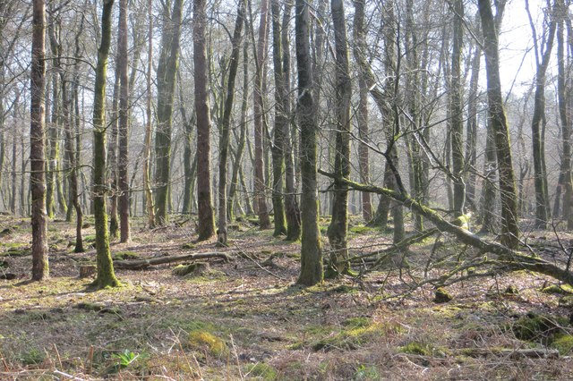
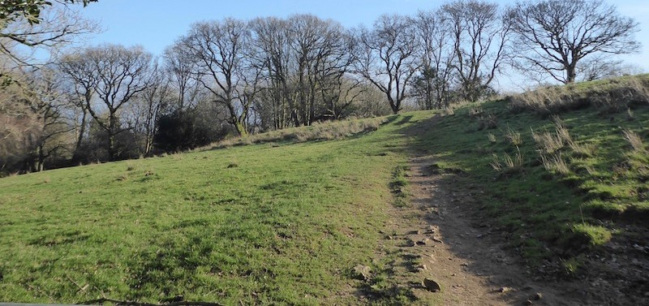

Somerset Trails
Staple Hill
Cheddar Gorge
Blagdon Lake
Somerset Coastal Path
Exmoor National park
☰
Explore the best trails one step at a time
Explore Staple Hill below:
1 / 3

2 / 3
3 / 3

Staple Hill Map
Explore our trails
Explore
Home
Cheddar Gorge
Blagdon Lake
West Somerset Coastal Path
Exmoor National Park
☰
Top